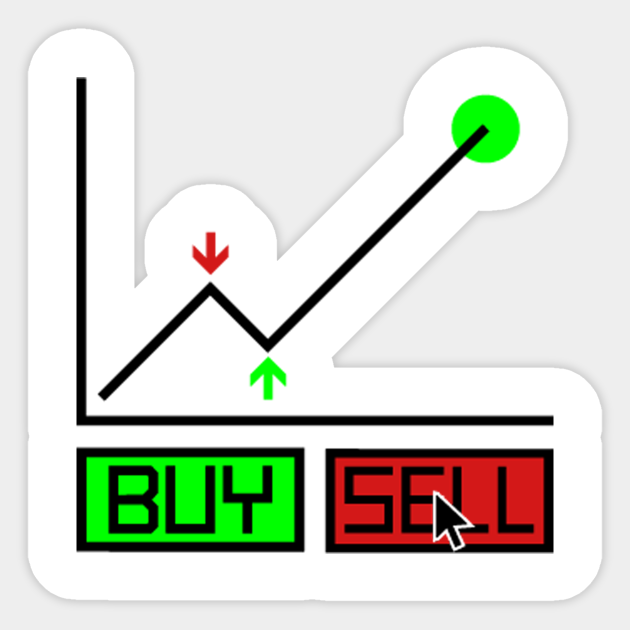

2022
My name is Zachary Waugh, I am 22 years old and have an interest in becoming a Data Analyst. I graduated in May 2021 with a Bachelor's of Science in Mathematics, also I have a background in Computer Science,Economics & Business. The skills that I possess, consists of: SQL, Tableau, Python, Excel/Google Sheets and Mathematics such as Calculus 1-3, Linear Algebra, Abstract Algebra, Real Analysis, Differential Equations, Number Theory, Game Theory, Trigonometry,Mathematical Modeling and Discrete Mathematics.

These are dashboards that were created through the uses of SQL & Excel/Google Sheets. Contains Tableau Dashboards for Projects on Esports Earnings, Top 10 Most Profitable vs Least Profitable Movies of all time, AUDJPY FTP & TSL, AUDJPY Wins & Win Percentage Per Session, AUDJPY Confluences, Buys & Sells, Videogame Sales, COVID-19, NBA Productivity, Earthquake Magnitude & Depth, AirBnB Exploration

Contains SQL Queries from SQL Server, Python Code from Jupyter Notebook & Datasets for every project that I have completed.

Total and Average Earnings for game, country & genre across 100 Esports players in 10 different games.

The most profitable vs least profitable movies and the exploration of statistics across many different areas, such as title, genre, director, writer, etc. from 1980-2020.
Over the course of 1 1/2 months, 130 trades were taken. Throughout those 130 trades, we looked at total trades, wins, losses, win percentage, etc. for Fixed Take Profit (FTP) & Trailing Stop Loss (TSL) trades. Then I did a deeper dive into the minimum, maximum, average and total profit made from each confluence, as well as the number of times the confluence occured.

Throughout the 130 trades, we see how many trades were taken, how many buys and sells were there, number of wins and loss, as well as the type and number of confluences per each trade.

Total Wins & Win Percentage across all 130 trades Per each session, for both Fixed Take Profit (FTP) & Trailing Stop Loss (TSL) trades, as well as Wins & Win Percentage combined.

Comparing the Confluences Profit for Fixed Take Profit (FTP) & Trailing Stop Loss (TSL) trades across for each session individually. Also, the profit made from each confluence across every session combined.
An Exploration of the Magnitdue scale and Depth for 23,119 Earthquakes that occured from 1969-2018.Where the Magnitdue is measured in Moment Magnitdue (Mw) and the Depth is measured in Kilometers (Km).
Image a client wants to start an AirBnB business in Seattle, Washington. They want to know where the best place to buy a home is, as well as other factors such as; location, number of bedrooms and how much they can charge customers (i.e. he wants to be able to make the most profit per property.)

Playstation, XBOX & PC Global Sales (In Millions & Billions) for Games, Platforms, Genres and total number of games for Platforms, Publishers, Genres and Years from the span of 1980-2020.

Through the use of SQL Server, we analyze and explore the global statistics of COVID-19, such as Deaths & Vaccinations.

Most producitive Players based on the productivity statistics throughout the NBA such as:
Points Per Game (PPG), Rebounds (REB), Assists (AST), Blocks (BLK), Steals (STL) etc.

In this project, we use SQL Server to clean messy data, remove unwanted, duplicates or non important data in order to make the data/analysis easier to read and work with.

In this Project, we use Python in order to scrape/obtain data from Amazon in order to analyze the price data for different products.
In this Project, through the use of Python, we look at different varables and see which ones have an effect on the gross revenue from movies.
Stakeholders want to know:
1. Are employees who only worked for the institutes for a short period of time resigning due to some kind of dissatisfaction? What about employees who have been there longer?
2. Are younger employees resigning due to some kind of dissatisfaction?
3. What about older employees?

We'll work with a dataset of used cars from eBay Kleinanzeigen,a section of the German eBay website. The aim of this project is to clean the data and analyze the included used car listings.

Hacker News is a site started by the startup incubator Y Combinator, where user-submitted stories (known as "posts") receive votes and comments, similar to reddit. Hacker News is extremely popular in technology and startup circles, and posts that make it to the top of the Hacker News listings can get hundreds of thousands of visitors as a result.
We're specifically interested in posts with titles that begin with either Ask HN or Show HN. Users submit Ask HN posts to ask the Hacker News community a specific question. Below are a few examples:
Ask HN: How to improve my personal website?
Ask HN: Am I the only one outraged by Twitter shutting down share counts?
Ask HN: Aby recent changes to CSS that broke mobile?
Likewise, users submit Show HN posts to show the Hacker News community a project, product, or just something interesting. Below are a few examples:
Show HN: Wio Link ESP8266 Based Web of Things Hardware Development Platform'
Show HN: Something pointless I made
Show HN: Shanhu.io, a programming playground powered by e8vm
We'll compare these two types of posts to determine the following:
Do Ask HN or Show HN receive more comments on average?
Do posts created at a certain time receive more comments on average?
In this project I used two different indicators to determine the traffic volume of I-94, they consist of:
Time indicators:
The traffic is usually heavier during warm months (March–October) compared to cold months (November–February).
The traffic is usually heavier on business days compared to the weekends.
On business days, the rush hours are around 7 and 16.
Weather indicators:
Shower snow
Light rain and snow
Proximity thunderstorm with drizzle

For this project, Say we're working as a data analyst for a company that builds Android and iOS mobile apps. We make our apps available on Google Play and in the App Store. We only build apps that are free to download and install, and our main source of revenue consists of in-app ads. This means that the number of users of our apps determines our revenue for any given app (i.e. the more users who see and engage with the ads, the better.) Our goal for this project is to analyze data to help our developers understand what type of apps are likely to attract more users.
In this project we are seeing if SAT Score's are fair for Highschools in New York City because they have a significant immigrant population and are very diverse, so comparing demographic factors such as race, income, and gender with SAT scores is a good way to determine whether the SAT is a fair test. For example, if certain racial groups consistently perform better on the SAT, we would have some evidence that the SAT is unfair.
Our focus in the guided part of the project will be on the exchange rate between the euro and the American dollar.
The dataset we'll use describes Euro daily exchange rates between 1999 and 2021. The euro (symbolized with €) is the official currency in most of the countries of the European Union.
If the exchange rate of the euro to the US dollar is 1.5, you get 1.5 US dollars if you pay 1.0 euro (one euro has more value than one US dollar at this exchange rate).